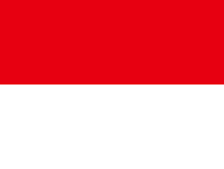

Profil Program Studi dan Profil Negara Indonesia
merupakan salah satu program studi dari universitas hasanuddin, fakultas MIPA,
departemen matematika.
- Kepala Prodi Sistem Informasi : Dr Muhammad Hasbi MSc.
- Alamat : Jl. Perintis Kemerdekaan No.KM.10, Tamalanrea Indah, Kec. Tamalanrea, Kota Makassar, Sulawesi Selatan 90245
- Akreditasi : B
Visi Dan Misi Prodi Sistem Informasi Unhas:
Visi :
Menjadi program studi inovatif pada tahun 2030 dalam pengembangan sistem informasi melalui karya ilmiah
bereputasi dan lulusan yang berdaya saing global berbasis sumber daya BMI
Misi :
- Menyelenggarakan Pendidikan Sarjana (S1) di bidang Sistem Informasi yang adaptif, Inovatif, beradab, dan bermoral agama
- Melaksanakan kegiatan Penelitian di bidang Sistem Informasi yang berkualitas nasional dan internasional
- Menyebarluaskan hasil penelitian dan inovasi bidang Sistem Informasi untuk mendukung organisasi, usaha
masyarakat dan industri agar mampu berkolaborasi saing global.
Negara Indonesia
Indonesia, disebut juga dengan Negara Kesatuan Republik Indonesia; atau hanya Republik Indonesia adalah negara di Asia
Tenggara yang dilintasi garis khatulistiwa dan berada di antara daratan benua Asia dan Australia serta antara Samudra
Pasifik dan Samudra Hindia. Wikipedia.

- Nama Resmi : Republik Indonesia
- Ibu Kota : Jakarta
- Semboyan : Bhineka Tunggal Ika
- Ideologi : Pancasila
- Konstitusi : UUD1945
- lagu Kebangsaan : indonesia raya
- hari Kemerdekaan : 17 Agustus !945
- Kode Telepon : +62
Klik disini untuk ke halaman sebelumnya